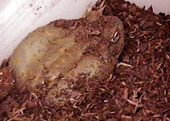

The
Sonoran Desert Toad
The
Sonoran Desert Toad
The
Sonoran Desert Toad
Bufo alvarius
CARE SHEET
Bufo alvarius toads can live for surprisingly long times. In general,
toads will live from about 5 to 15 years, but the oldest recorded specimen (not
B. alvarius) lived to the age of 36.

HANDLING
ALWAYS WASH YOUR HANDS BEFORE AND AFTER HANDLING BUFO ALVARIUS. Especially if you also own cats or dogs.
Handling should be kept to a minimum. All amphibians have a permeable skin that is sensitive to toxins. Quite often, in the course of a day, one's hands can become covered with numerous substances that are poisonous to toads (hair spray, insecticides, chalk, ink, disinfectants, soaps, etc.) - be certain to thoroughly wash your hands before handling your toads. Be aware of the venom glands (the large bumps located directly behind the eyes and above the ears, and on the legs). The venom (a milky looking substance) is strong enough to kill a dog or cat, and conceivably a person if enough is ingested. It can also severely irritate eyes and nasal linings. The venom is secreted from the glands if the toad is sufficiently stressed.
THE TOAD'S HOUSING
You should keep your toads in a quiet area of your home, free of excessive human activity and noise. The toads will not do well if they are kept on top of a television or near stereo speakers, since they can be sensitive to sound vibrations. Also, you may not want to provide too much light for your Bufo alvarius as these toads are nocturnal and excessive light may cause them stress.
Toads may be kept in a large (20 gallon or more) aquarium, or similar sized plastic box. A tight fitting cover is essential because these toads are strong jumpers. A cheap and practical enclosure could be a large plastic storage bin with the lid modified by removing the larger part of the center and replacing it with fine mesh wire to allow for ventilation.
Toads like to burrow and hide during the day so a substrate in which they can burrow works out well. The substrate can be bark nuggets or smooth, large pebbles that cannot be easily ingested, cypress mulch, peat moss, or dried sphagnum moss. Do not use soil as a substrate. Pieces of large flat bark, drift wood or rocks can be placed in the cage for hiding spots as well. Or a few hide-logs and rock caves will allow the toads more privacy. The environment, with the exception of the water dish, should be dry. Plants, if added, should be kept in pots. Live plants can be stuck into the substrate still in their pots to make the cage look nicer and add hiding spots for the toads.
TEMPERATURE
Toads are cold blooded and cannot produce their own heat. This means that your toad's body temperature will essentially match that of its environment. Bufo alvarius should be kept at 75-80F (24-27C). They can tolerate cooler and warmer conditions fairly well and they tolerate, but should not be maintained, at elevated temperatures for extended periods. At lower temperatures do not feed them as much or as often since they will not be digesting food as quickly. If necessary, you can provide heat for your toads in several ways. Some people use ceramic heating elements over the cage for basking areas, or other people choose to use heating pads or heat tape under one end of the cage. Special basking lamps are also available, as are nocturnal heat lamps. Most experienced toad keepers will use a thermometer in their toad's enclosures in order to know whether or not their toads are living within a suitable temperature range. Generally, in order to keep your toads in optimal health, the daytime temperature should be accompanied by a nightly temperature drop. Humidity in the enclosure should remain low, no more than 15-20%, as the enclosure should be well ventilated.
FOOD
In the wild, B. alvarius eats any living thing it can get into its mouth - small rodents, small fish, tadpoles, smaller frogs and toads, and insects of every variety including ants, scorpions, wasps, and bees. Night time lights attract insects and it's fun to watch the toads feast upon the fallen bugs drunk with blindness. As the B. alvarius sits perfectly still, it rapidly wiggles a tiny finger on it's foot in order to entice some insect to mistake this movement for prey. This ploy inevitably brings its victim within striking range of the toad's snapping tongue, and a quick meal is had.
What should you feed your captive toads? Crickets and an occasional pinkie from your local pet store are probably the easiest source of feed. But if you really love your toads, you'll make that extra effort to add a little of nature's variety to their diet. ;-) Toads have voracious appetites and they will let you know they are hungry by how active they eat. But do not overfeed your toads; it is better to offer smaller amounts of food more often than a large amount at one setting. Calcium deficiencies are fairly common, and it may be advisable to gut-load your insects with high calcium foods or dust them in a calcium powder. Food items can be lightly dusted with a vitamin/mineral supplement that contains calcium and phosphorus in a 2:1 calcium:phosphorus ratio and vitamins A and D3. Gut-loading is the process in which you feed the insects highly nutritious food before you feed them to your toads. The insects are fed on calcium-rich insect food, fish food, dry dog food, or other foods that will be nutritious for your toads. Before I feed crickets to my toads, I usually feed them carrot, lettuce and oats so that all the nutrients from those foods are inside the cricket when my toads eat them. Over-feeding of vitamins and minerals has been known to cause renal failure and other serious health problems. However, vitamin deficiencies and malnutrition are also serious disorders. The best way to ensure that your toads get proper nutrition, however, is to feed them a varied and correct diet.
WATER
De-chlorinated, filtered, or spring water should be used. Tap water can be de-chlorinated either chemically or by boiling or by letting it sit in a clean bucket or bowl for about 48 hours to allow most of the chlorine in the water to be released into the air. Toads do not drink water, they absorb it through their skin, therefore a water dish should be provided that is large enough for the toads to easily get in and out of. Don't provide water at a depth which is over the toad's head, but, the bowl should be deep enough to allow the toad to almost fully immerse itself. You should choose a bowl that it is difficult or impossible for your toads to overturn. Water should be changed frequently so that it is always fresh; change it as soon as it becomes soiled.
CLEANING THE TOAD'S HOUSING
The type and design of your enclosure will determine how often you need to clean it. For major cleanings, you should place your toads in a separate enclosure, as most items in the enclosure should be cleaned. There are two types of cleaners available for use: mechanical cleaners and disinfectants. Both types are important in maintaining cleanliness. A mechanical cleaner will aid in physically removing dirt or other soiling. A disinfectant will help kill germs. You should use the mechanical cleaner before the disinfectant. Many people prefer to use a bleach and water solution to clean their toad's enclosures. Commercial household cleaners should generally be avoided, as they may contain ingredients that are toxic. No matter what you use, be sure that you rinse the enclosure thoroughly once you have finished. Remaining residue can cause health problems for your toads. Also, some people believe that traces of disinfectant that remain in the enclosure can harm or kill your toads. They wash the cage with warm water and a small amount of mild dish soap, then rinse thoroughly and dry completely to remove any traces of chlorine from the tap water.
HEALTH
If the temperature range is correct, a loss of appetite is reason for concern. Always examine water quality first, then air quality (airborne contaminants can settle in the water or directly on the animal), then food quality. Please refer to Diseases and Parasites below for a description of health problems and some possible treatment procedures, and see a veterinary professional if you need to.
I always make it a priority to get wild-caught toads checked for internal parasites and to treat them. I usually use a drug called "Panacure" which is very safe. I feel that any wild-caught toad is almost certainly infected with something and that while this may not be a problem in the wild; when they are kept in a cage, they get re-exposed to the parasite eggs through contact with their own wastes and will eventually have problems - particularly if stressed.
***
Except for conditioning animals for breeding, hibernation (aestivation) is mainly an adaptive response to adverse conditions, not an absolute necessity for the life for many herps. Certainly, you may extend the lifespan a bit (although many captive longevity records for temperate herps are often held by non-hibernated individuals) by putting them in a low metabolic state for prolonged periods, but I am am not sure you are significantly prolonging their active life. Also, hibernation itself involves significant risks, primarily from diseases affecting the immune system at its sub-optimal temperature in a weakened animal, and from dehydration, even in a controlled indoor environment. Malnutrition is also a possibility if the animal has not been properly conditioned prior to cooling. This is one area that could probably use a lot more research and I am sure there are many shades of opinion out there.
As for the Colorado River toads in particular, I have maintained them for years in a warm reptile room in
apparent good health without hibernation. I keep them on substrate of potting soil or cypress mulch with a large
shallow water dish. I keep the tank on the dry side (moist but not
soggy) with a piece of plastic loosely covering a screen top to retard evaporation but permit good ventilation.
I feed crickets,
night crawlers and an occasional pinky mouse.
I would never initiate hibernation with temperate animals, but when they decide to go to sleep there's no
stopping them. Some years they do, some years they don't. At that point I believe it benefits them to be in a
cooler environment. I will put them in a 50�F room until they wake up on their own.
With temperate snakes it's well accepted that if you don't cool a brumating snake they become subject to
starvation and respiratory infections. The metabolism was running too high for brumation; too low for active
state. You may call this a stretch, but the same applies to plants with a dormant period. If you continue to
feed and water and maintain temps on a plant going into dormancy you will certainly kill it. Again, I
believe a dormant period is not necessary unless the
toad insists, but I do think you have to cooperate with it when he does. It's hard to imagine that you could let
a
toad remain warm during hibernation without causing some kind of problem.
=============
Please note that this section is intended to serve only as a description of health problems and some possible treatment procedures. It should be seen as an outline, aiding to form your expectations of treatments and helping you recognize symptoms of problems. Unless you are qualified to diagnose ailments or to perform these treatments, you should see a veterinary professional.
=============
For those interested in further information regarding the care of B. alvarius, please consult:
Recommendations for the Care of Amphibians and Reptiles in
Academic Institutions,
Dr. F. Harvey Pough
Care
Information for Frogs and Toads at CentralPets.com
Toad
Forum at Kingsnake.com
New England
Herpetological Society
AllAboutFrogs.org
Longevity of three B. alvarius toads
in captivity:
15 Years, 5 Months. Gender unknown, acquired 09/09/70 as an adult. Died 02/25/86.
11 Years, 8 Months. Female, acquired 09/08/81 as a juvenile. Wild bred. Died 06/04/93. Collected at 1.5".
9 Years, 2 Months. Gender unknown, acquired date unknown as an adult. Wild bred.
1977.
The information in this care sheet was complied from various sources. Any other
information you can provide from your own sources and experiences with Bufo
alvarius is greatly
appreciated - please EMAIL it to me.